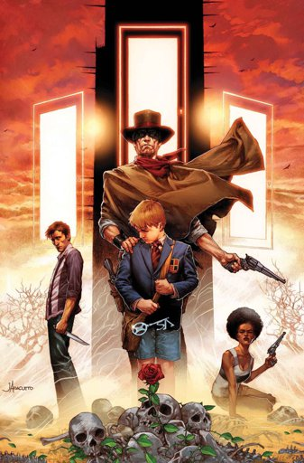

Childe Roland to the Dark Tower Came
Gunslingers were the highest authority in All-World, a parallel version of our own Earth. Their duty was to keep that world from "moving on" — the commonly used expression for collapsed of not only civilization but reality itself; originally they didn't have guns and formed an order of Knights, wielding swords and shields.
In All-World, they were considered natural leaders, peacekeepers, and mediators in disputes. But with that world running short of resources, especially metal, guns were few and far between; thus, the title of gunslinger could only be given to a select few. These people, all of them of noble blood and all but a very, very few males, were rigorously trained from the age of six for their role from early boyhood to adulthood, performing near-superhuman feats of strength, endurance, and concentration while also being taught the highest knowledge of their time.
One could forsake his training and remain an aristocrat. If they did, they were free to stay in their homeland, but would never become a gunslinger. But one who did take the final test, single combat with his physical instructor, and failed it, would not be given a second chance. Rather, they would be disowned and sent west into exile. They believe that maintaining their own codes and culture is more important than the maintenance of the Affiliation, forgetting that Affiliation also is a symbol of the White as they are.
By the start of the first volume in The Dark Tower Series, All-World has moved on so far that "what was north one day, might be east the next" and what humanity there is, exists largely in a state of barbarism or mutation. Yet, one gunslinger remains in that world; Roland, a descendant of Arthur Eld, who for reasons unclear even to himself is on an unrelenting search for the legendary Dark Tower, the nexus of existence itself.
